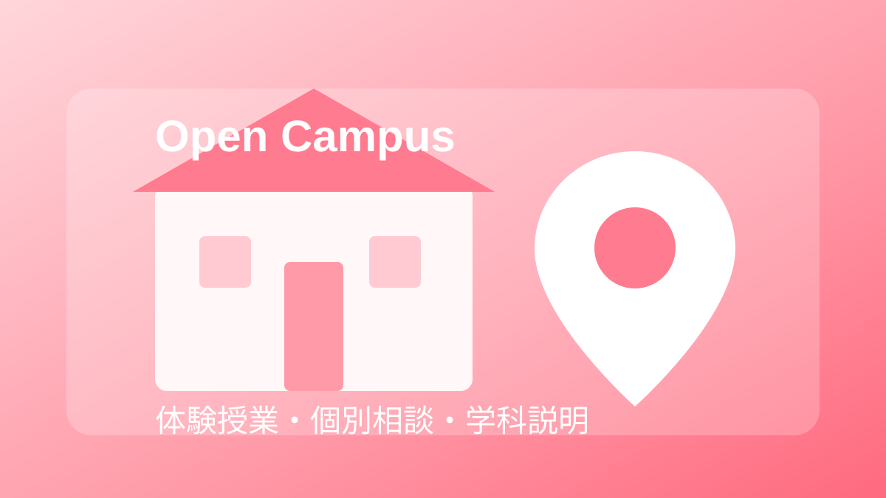

赤塚学園について
学校法人赤塚学園は、鹿児島市上荒田町にある専門学校です。
医療・福祉・美容・デザイン・ビジネス分野で、実践力と就職力を育てる教育を行っています。
オープンキャンパスやオンライン個別相談も実施しており、県外・海外からの進学相談にも対応しています。
- 看護学科・医療事務科・美容科・デザイン科・グローバルビジネス・日本語科を設置
- 少人数教育で学生一人ひとりに寄り添う指導
- オープンキャンパスとオンライン相談会を定期開催
- 資料請求・お問い合わせフォームを24時間受付

📱ソーシャルメディア
公式サイト掲載のSNS・相談窓口です。最新情報やイベント情報をこちらで確認できます。
Instagram
美容科・デザイン科の公式Instagram。授業風景や制作活動、イベント情報を発信しています。
@akbd_b を見る
Open Campus
来校型オープンキャンパス情報。学科説明、体験授業、個別相談の案内を確認できます。
開催日程をチェックオンライン相談会
遠方の方でも参加しやすいオンライン個別相談会。ZOOMで進学相談ができます。
自宅から相談するLINE
看護学科・医療事務科のLINE公式アカウント。1:1トークで相談・予約が可能です。
公式LINEで相談する追加リンク: 美容科・デザイン科 LINE公式アカウント / 新着情報